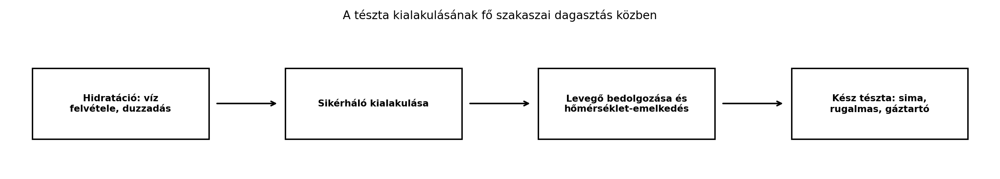

Hajnali műszakban a pék gyakran tapasztalja, hogy ugyanaz a liszt, ugyanaz a víz és ugyanaz a recept, mégis más a tészta, mint tegnap volt: feszesebb, lágyabb, ragadósabb vagy éppen szakadozó. A különbség legtöbbször a dagasztás körülményeiben van: mennyi vizet adtunk a liszthez, milyen hőmérsékleten, meddig és milyen intenzitással dagasztottunk. A dagasztás nem egyszerű keverés, hanem a tészta kialakításának legfontosabb fizikai, kémiai és biológiai művelete. Ha rosszul végezzük, hiába jó a liszt és a kovász, a késztermék rossz lesz: lapos kenyér, szakadozó héj, tömör bélzet, gyors penészedés vagy éppen kezelhetetlen, ragacsos tészta. Ez az alfejezet elmagyarázza, mi történik a dagasztógép edényében, és mely számokkal jellemezhetjük a kész tészta állapotát.
Képzeljünk el egy kisméretű szakaszos dagasztógépet. Először a lisztpor és a víz keveréke egy morzsalékos, matt massza; a fehérje- és keményítőszemcsék vízbe áztatva még nem alkotnak összefüggő hálót. Ahogy a spirálkar jár, a massza fokozatosan összeáll, fényesedik és simává válik. A tészta már nem szakad szét, hanem megnyúlik, „ablakot” formálunk belőle. Ekkor rugalmas, gáztartó szerkezet alakult ki, amelyben a később fejlődő szén-dioxid buborékjai megmaradnak. Ez a kép a tészta kialakulásának lényege.
Definíció. A dagasztás a liszt, a víz és a további nyersanyagok mechanikai munkával történő összekeverése és gyúrása, amelynek célja egy egyenletes, összefüggő, rugalmas, gáztartó, a technológiai igényeknek megfelelő hőmérsékletű és állagú tészta kialakítása.
A dagasztásnak négy fő célja van:
Definíció. A tészta a sütőiparban olyan viszkoelasztikus, gáztartó anyagrendszer, amelyet legalább liszt és víz dagasztásával állítunk elő; a búzalisztnél a gliadin és a glutenin fehérjék hidratálódva sikérhálót alkotnak, a keményítőszemcsék pedig ebbe a hálóba ágyazódnak.
A dagasztás alatt a tészta folyamatosan alakul, de három szakaszt célszerű megkülönböztetni.
1. Hidratáció. A víz először a liszt alkotóinak felületére kötődik. A keményítőszemcsék vizet vesznek fel, a fehérjék – elsősorban a gliadin és a glutenin – duzzadnak. Ebben a szakaszban a tészta még morzsalékos, a sikér nem alkot összefüggő hálót. A liszt vízfelvevő képessége, a szemcseméret és a víz hőmérséklete befolyásolja, hogy milyen gyorsan és mennyi vizet tud felvenni a rendszer. A nagyobb víz hőmérséklet gyorsítja a duzzadást, de túl meleg víz esetén az élesztő aktivitása is túl korán felgyorsul.
2. Sikérháló kialakulása. A mechanikai munka hatására a duzzadt fehérjeláncok egymáshoz csúsznak, és kémiai kölcsönhatások alakulnak ki közöttük. A glutenin láncok diszulfid-hidakkal, hidrogénkötésekkel és hidrofób kölcsönhatásokkal kapcsolódnak össze, a gliadin molekulák pedig beilleszkednek ebbe a vázba. Így jön létre a sikérháló: egy folyamatos, rugalmas fehérjeháló, amely a tészta „vázát” adja. Ettől lesz a tészta sima, fényes, rugalmas, nem ragadós és nem szakadó. Ha a dagasztást idő előtt abbahagyjuk, a sikérháló gyenge marad: a tészta szakad, a későbbi szén-dioxid kiszökik, a termék tömör lesz.
3. Levegő bedolgozása és hőmérséklet-emelkedés. A dagasztókar folyamatosan hajtogatja a tésztát, ezért apró légbuborékokat zár be. Ezek a légzárványok később az élesztő által termelt szén-dioxid buborékjainak csírái. A bedolgozott oxigénnél az is fontos, hogy kis mértékben oxidálja a fehérjeláncokat, és ezzel stabilizálja a sikérhálót; a sütőipari oxidálószerek (pl. aszkorbinsav) ezt a hatást erősítik. Ugyanakkor a dagasztókar súrlódása hőt fejleszt, és a tészta belső hőmérséklete emelkedik. A túl hosszú dagasztás ezért nemcsak túloxidálja, hanem túlmelegíti is a tésztát.
Ezek a szakaszok nem élesen válnak el, hanem átfedik egymást. Az alábbi folyamatábra a fő lépésekkel szemlélteti a tésztakialakulást.

Az ábra azt mutatja, hogy a morzsalékos, hidratálódó masszából hogyan lesz a dagasztómunka végére összefüggő, gáztartó tészta. Hogy mi történik közben a tészta belsejében, azt a következő sematikus „nagyítás” szemlélteti: az 1. képen a keményítőszemcsék és a duzzadó fehérjék még rendezetlenül állnak, a 2. képen a fehérjék összefüggő, keresztkötésekkel kapcsolt sikérhálóvá rendeződtek, a 3. képen a hálóba apró légzárványok záródtak. A 4. kép a túldagasztást mutatja: a háló szakadozik, a buborékok összefolynak.
Az alsó sor azt mutatja, amit a pék a csészében lát: a sima, fényes, rugalmas tészta (3) jelzi, hogy a háló kiépült – ezt ellenőrzi az ablakpróba a Dagasztási módok és a fajlagos dagasztómunka alfejezetben. A légzárványok azért fontosak, mert az erjedés során keletkező szén-dioxid ezekbe gyűlik; a túldagasztott tésztában (4) a háló nem tartja meg a gázt. A HTML-változatban a négy szakasz egyenként léptethető.
A tészta nem egyszerű oldat, hanem összetett kolloidális rendszer. A búzaliszt fehérjéi víz jelenlétében hidratált fehérje-gélt alkotnak, a keményítőszemcsék pedig ebbe a gélbe ágyazódnak. A víz egy része erősebben kötődik a fehérjékhez és a keményítőhöz, másik része szabadon marad, és az enzimek, élesztő működésének közege. A tészta állaga egyszerre rugalmas, mert a sikérháló visszanyeri alakját, és képlékeny, mert a fehérjeláncok egymáson elcsúsznak. Ez a viszkoelasztikus tulajdonság teszi lehetővé, hogy a tészta megtartsa az erjedéskor keletkező gázt, ugyanakkor formázható legyen. Ha a dagasztás nem megfelelő, a viszkoelasztikus egyensúly felborul: a túl lágy tészta inkább folyik, a túl feszes pedig inkább szakad.
A pék a dagasztás végén és a további műveletek során négy mutatót figyel leginkább. Ezek a mutatók minden termékcsoport technológiai lapján visszatérnek.
Definíció. A tésztakitermelés (TA) az a lisztre vetített százalékos érték, amely megmutatja, hogy 100 tömegrész liszthez hány tömegrész liszt és víz együttes tömegéből álló tészta tartozik.
A TA tehát nem a teljes tészta tömegét jelenti, mert az élesztőt, sót, kovászt és egyéb anyagokat a képlet közvetlenül nem tartalmazza: a TA a liszt és a víz arányát fejezi ki. Ha például 100 kg liszthez 60 kg vizet adunk, a TA értéke 160. A TA hatása a termékre erős: magasabb TA lágyabb, nyúlósabb tésztát, nagyobb tömegű, párásabb bélzetű terméket ad, de túl magas értéknél a tészta folyós, a termék lapos és gyorsan romlik. Alacsony TA feszes tésztát, kisebb térfogatot és szárazabb bélzetet eredményez. A liszt vízfelvevő képessége, a terméktípus és a kovász aránya együttesen határozza meg, mekkora TA-val dolgozhatunk.
Definíció. A tésztahőmérséklet a kész tészta belső hőmérséklete a dagasztás végén, °C-ban mérve. A legtöbb búzatésztánál a 26–28 °C a kívánatos tartomány (tanulási példa; a pontos érték a terméktől, a recepttől és a gép hőfejlődésétől függ, ellenőrizendő: üzemi technológiai lap). A tésztahőmérséklet közvetlenül szabályozza az élesztő aktivitását, ezen keresztül az erjedés sebességét és a tésztaérés ütemét. 30 °C felett az erjedés túl gyors: a tészta hamar savanyodik, terül, ragacsos lesz; 20 °C alatt az élesztő lassan dolgozik, a kelés elhúzódik, a termék halvány és tömör lehet.
A tésztahőmérsékletet a liszt hőmérséklete, a dagasztóvíz hőmérséklete, a kovász hőmérséklete és a dagasztás során keletkező súrlódási hő együttesen adja. A pontos számítást a Tésztahőmérséklet és dagasztóvíz számítása alfejezet mutatja be; itt az a fontos, hogy a dagasztóvíz hőmérséklete nem azonos a tésztahőmérséklettel, mert a többi anyag és a gép munka hatására további hőmérsékletváltozás következik be.
Definíció. A dagasztási idő az az időtartam, ameddig a dagasztógép az összeállított tésztán mechanikai munkát végez. A dagasztási idő függ a gép típusától, a fokozattól, a liszt minőségétől, a tészta összetételétől és a hőmérséklettől. A túl rövid dagasztás gyenge sikérhálót hagy: a tészta szakad, rossz a gáztartása. A túl hosszú dagasztás túloxidálja a fehérjéket, a sikérháló fellazul, a tészta ragadós, fényes, terülős lesz, a késztermék térfogata csökken. Az optimális dagasztási időt minden receptnél gyakorlati próbával kell beállítani.
Definíció. Az érési idő (pihentetési idő) az az idő, amely a dagasztás befejezése után az erjedés vagy a további műveletek során a tésztára hat, és amely alatt a sikérháló fellazul, az enzimek bontanak, az élesztő erjedni kezd. A dagasztási idő és az érési idő nem keverhető össze: a dagasztás a háló kialakítását, az érés a háló további pihenését, lazulását és a tészta formázhatóvá válását szolgálja. Az érési idő hossza hatással van a tészta megmunkálhatóságára, a termék térfogatára és a bélzet lyukacsosságára.
Definíció. A tésztaérés gyűjtőfogalma mindazokat a fizikai, kémiai és biológiai változásokat jelenti, amelyek a tésztában a dagasztás és az erjedés során végbemennek: a sikérháló pihenése, a keményítő enzimes bontása, az élesztő gáztermelése, a savanyodás és az ízkialakulás. A tésztaérés pontos folyamatait az A tésztaérés folyamatai és az átgyúrás alfejezet tárgyalja.
A négy mutató – TA, tésztahőmérséklet, dagasztási idő, érési idő – együtt hat a tésztaérésre. Ha a TA magas, a tészta lágy, az erjedés gyorsabb, de a tészta gyorsabban is túlérik. Ha a tésztahőmérséklet magas, az élesztő gyorsabban termel gázt és savakat, ami rövidebb érési időt enged. Ha a dagasztási idő optimális, a sikérháló erős, a tészta jobban tartja a gázt, így az érés alatt a térfogatnövekedés szép és egyenletes. Ha bármelyik mutató eltolódik, a többi értékét is módosítani kell, vagy a termék hibás lesz.
Példa 1: TA számítása egy egyszerű
búzatésztánál.
Adott: 100 kg liszt, 58 kg dagasztóvíz.
Keresett: a tészta TA-ja.
Ellenőrzés: a liszt 100%-hoz viszonyítva a tészta 158%-os, azaz 58 kg víz felvétele 58% vízfelvételnek felel meg. Ez a kenyértésztákra jellemző, közepes TA-érték.
Ha ugyanahhoz a liszthez 62 kg vizet adunk, a TA 162 lesz. Ez a 4 százalékpontos különbség láthatóan lágyabb tésztát eredményezhet, amelynek hosszabb dagasztási idő vagy kisebb tésztahőmérséklet kellhet.
Példa 2: A tésztahőmérséklet becslése.
Adott: 100 kg liszt hőmérséklete 20 °C, 60 kg dagasztóvíz hőmérséklete
15 °C, a dagasztás során a súrlódási hő hatására a tészta hőmérséklete
kb. 4 °C-kal emelkedik.
Keresett: a kész tészta várható hőmérséklete.
Először a liszt és a víz keverési hőmérsékletét a hőkapacitással (tömeg · fajhő) súlyozott átlaggal becsüljük, ahogy a Tésztahőmérséklet és dagasztóvíz számítása alfejezet is (liszt: , víz: ):
A liszt fajhője kb. 40%-a a vízének, ezért a víz hőmérséklete erősebben hat (lásd: Tésztahőmérséklet és dagasztóvíz számítása).
Ehhez adjuk hozzá a súrlódási hőből származó emelkedést:
Ez az érték a kívánatos 26–28 °C alatt marad, tehát ebben a példában a dagasztóvíz hőmérsékletét emelni kellene. A számítás csak becslés, mert a súrlódási hő függ a gép típusától, a dagasztási módtól és a tészta mennyiségétől; a pontos módszert a Tésztahőmérséklet és dagasztóvíz számítása alfejezet adja.
Példa 3: Ellenpélda – túl hosszú dagasztás
jelei.
Egy pékségben spirálos dagasztógéppel 25 percig dagasztottak egy
zsemletésztát, és a tészta hőmérséklete elérte a 35 °C-ot. A tészta
fényes, ragadós, terülős lett; a kész zsemle lapos, a bélzet tömör, a
héj vékony és szakadozó. Ez a túldagasztás és a túl meleg tészta jele. A
helyes gyakorlat: rövidebb dagasztási idő, hidegebb dagasztóvíz, és a
tésztahőmérsékletet 26–28 °C közelében tartani.
Nyáron egy kisebb pékségben a pék azt tapasztalja, hogy a kenyértészta a dagasztás végén 32 °C-os, ragad, és a kelesztés közben terül. A liszt jelei jók, a kovász is érett, de az üzem meleg, a liszt 28 °C-on áll, a dagasztóvíz pedig a vízvezetékből kellemesen langyos, 24 °C-os. A dagasztás ráadásul 20 perc helyett 28 percig tartott, mert a pék telefonált. A túl meleg, túl hosszan dagasztott tészta túl korán erjedni kezd, a sikérháló túloxidálódik, és a termék elveszti formáját. A megoldás nem a lisztcsere, hanem a technológiai mutatók helyreállítása: a dagasztóvizet a hőmérleg (vagy a 2×-es szabály) szerint kb. 18–20 °C-ra hűteni (szükség esetén jéggel), a dagasztási időt visszaállítani (a számítást lásd: Tésztahőmérséklet és dagasztóvíz számítása), és a tészta hőmérsékletét dagasztás után mindig mérni. Ez az eset jól mutatja, hogy a jó pék nemcsak a receptet, hanem a tészta technológiai mutatóit is irányítja.
Hiba 1: A TA-t a teljes tészta tömegére számolják. Sokan bemondják, hogy a TA 165, mert 100 kg lisztből 165 kg tészta lett, pedig a tésztába tettek 60 kg vizet, 2 kg élesztőt, 2 kg sót és 1 kg kovászt. A TA valójában 160, mert a képletbe csak a liszt és a víz kerül. A téves TA-érték megzavarja a receptúra-ellenőrzést.
Hiba 2: A dagasztóvíz hőmérsékletét egyenlőnek veszik a tésztahőmérséklettel. Ha a pék 27 °C-os vizet vesz, és a liszt 22 °C-os, a kész tészta a súrlódási hő miatt 30 °C fölé melegedhet. A tésztahőmérsékletet mindig a végén kell mérni, és a vízhőmérsékletet a folyamat egészéhez igazítani.
Hiba 3: A dagasztási időt „biztos ami biztos” alapon túl hosszúra állítják. A túldagasztott tészta fényes, ragacsos, és a termék gyenge. Rendszeresen ellenőrizni kell a tészta állagát: a jól kialakult tészta fényes, sima, és ujjal benyomva visszarugózik.
Hiba 4: Az érési időt nem különböztetik meg a dagasztási időtől. A dagasztás után a tészta még nem kész a formázásra; pihentetni, érlelni kell. Ha a pék ezt kihagyja, a tészta túl rugalmas, nehezen nyújtható, és a formázott darabok visszaugranak.
1. feladat (A)
Adjon pontos definíciót a dagasztásra és a tésztakitermelésre (TA). Írja
fel a TA képletét, és magyarázza el, miért nem a teljes tészta tömegére
vonatkozik.
2. feladat (A)
Számítsa ki a TA-t, ha 80 kg lisztet és 48 kg vizet használunk.
3. feladat (B)
Egy technológiai lap TA 165-öt ír elő 100 kg lisztre. a) Mennyi víz
kell? b) A pék csak 55 kg vizet adna – mekkora lenne a TA, és mennyi víz
hiányzik?
4. feladat (B)
Egy dagasztás végén a tésztahőmérséklet 34 °C. A tanuló azt mondja, hogy
a dagasztóvíz hőmérséklete is 34 °C volt. Mi a hiba ebben a
következtetésben? Indokolja, és nevezze meg, mely tényezők befolyásolják
a kész tészta hőmérsékletét.
5. feladat (C)
Egy pékségben a kenyértészta a dagasztás után fényes, ragadós, és a
kelesztés során a tészta terül. A dagasztási napló szerint a dagasztási
idő 32 perc, a tésztahőmérséklet 33 °C volt. A liszt minősége jó.
Elemezze a lehetséges okot, és adjon javítási tervet a technológiai
mutatók megváltoztatására.
6. feladat (D)
Készítsen egyszerű megfigyelési tervet a dagasztás végén az A dagasztás célja és a tészta kialakulása
alfejezet alapján. Soroljon fel legalább három mutatót, amelyet mérni
vagy érzékszervileg ellenőrizni kell, adja meg a kívánatos értéket vagy
jellemzőt, és írja le, mi a teendő, ha az érték eltér.
1. feladat (A)
A dagasztás célja: a liszt, víz és további nyersanyagok mechanikai
keverése és gyúrása, hogy egyenletes, összefüggő, rugalmas, gáztartó,
megfelelő hőmérsékletű tészta keletkezzen. A TA (tésztakitermelés) a
lisztre vetített százalék:
.
A TA csak a liszt és a víz arányát mutatja, ezért a só, élesztő, kovász
és egyéb anyagok tömege nem szerepel benne. Így a TA nem a teljes tészta
tömegét, hanem a liszt vízfelvevő képességéhez viszonyított
tésztakonzisztenciát fejezi ki.
2. feladat (A)
A tésztakitermelés 160.
3. feladat (B)
A TA 165 azt jelenti, hogy 100 kg liszthez annyi vizet kell adni, hogy a
liszt + víz tömege 165 kg legyen. Tehát a víz tömege:
.
Ha a pék 55 kg vizet akar adni, a TA csak 155 lenne, tehát 10 kg vizet
még hozzá kell adni.
4. feladat (B)
A dagasztóvíz hőmérséklete nem azonos a kész tésztahőmérséklettel. A
tésztahőmérsékletet a liszt hőmérséklete, a dagasztóvíz hőmérséklete, a
kovász hőmérséklete és a dagasztás során keletkező súrlódási hő
együttesen adja. Ezért abban az esetben, ha a tészta 34 °C, a víz
hőmérséklete alacsonyabb vagy magasabb is lehet, a többi tényezőtől
függően. A pontos számításhoz a Tésztahőmérséklet
és dagasztóvíz számítása alfejezet szolgál.
5. feladat (C)
A tünetek: fényes, ragadós, terülő tészta; a dagasztási idő túl hosszú
(32 perc), a tésztahőmérséklet túl magas (33 °C). A túl hosszú dagasztás
túloxidálja a sikérhálót, a túl magas hőmérséklet pedig gyors erjedést
és savanyodást indít. A javítási terv: legalább 5–8 perccel csökkenteni
a dagasztási időt, a dagasztóvizet jég hozzáadásával hidegebbre
állítani, a lisztet hűvösebb helyen tárolni, és a dagasztás végén a
tésztahőmérsékletet 26–28 °C környékére beállítani. Rendszeres mérés és
naplózás kell.
6. feladat (D)
A megfigyelési terv három mutatója:
Ezek a mutatók segítenek a következő alfejezet, a Tésztahőmérséklet és dagasztóvíz számítása megértésében.
A dagasztás célja a nyersanyagok egyenletes elkeverése, a sikérháló kialakítása, a levegő bedolgozása és a tésztahőmérséklet beállítása. A tészta a lisztfehérjék hidratációjával és mechanikai munkával jön létre: a gliadin és a glutenin víz hatására duzzad, majd a dagasztás során rugalmas, összefüggő sikérhálót képez, a keményítőszemcsék pedig ebbe a hálóba ágyazódnak. Ez a viszkoelasztikus rendszer tartja meg az erjedéskor keletkező szén-dioxidot. A tészta technológiai mutatói: a tésztakitermelés (TA = (liszt + víz) / liszt · 100), a tésztahőmérséklet, a dagasztási idő és az érési idő. A TA a lisztre vetített vízfelvételt adja meg, és nem a teljes tészta tömegére vonatkozik. A tésztahőmérséklet szabályozza az élesztő aktivitását, a dagasztási idő a sikérkialakulást, az érési idő a pihentetést és az erjedést. Továbbvitt eredmény. A tészta technológiai mutatóit – TA, tésztahőmérséklet, dagasztási idő, érési idő – minden termékcsoport technológiai lapján használjuk a kenyérfélék, a péksütemények és a finom pékáruk gyártásánál; a tésztahőmérséklet pontos számítását a Tésztahőmérséklet és dagasztóvíz számítása alfejezetben végezzük el.